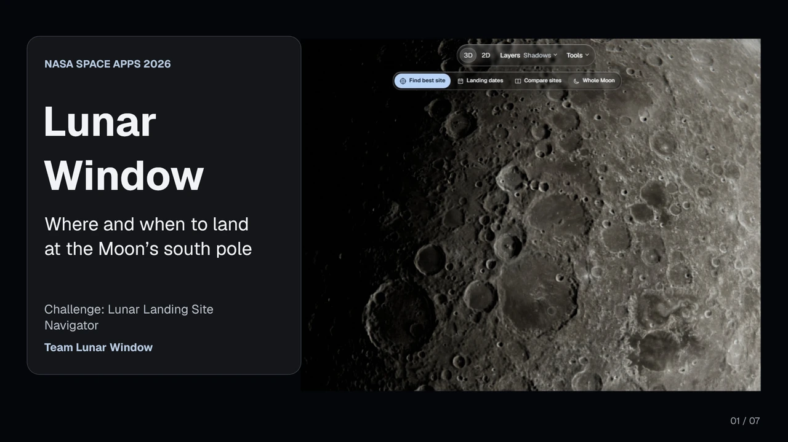
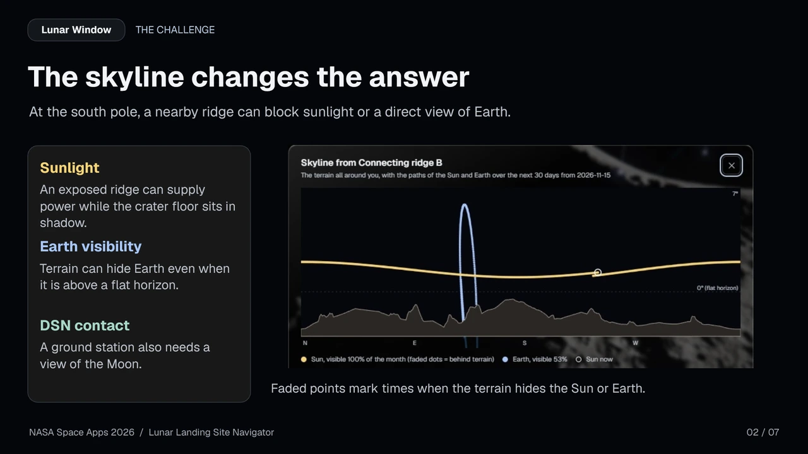
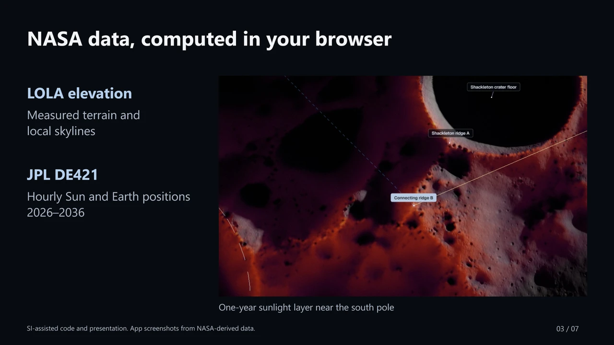
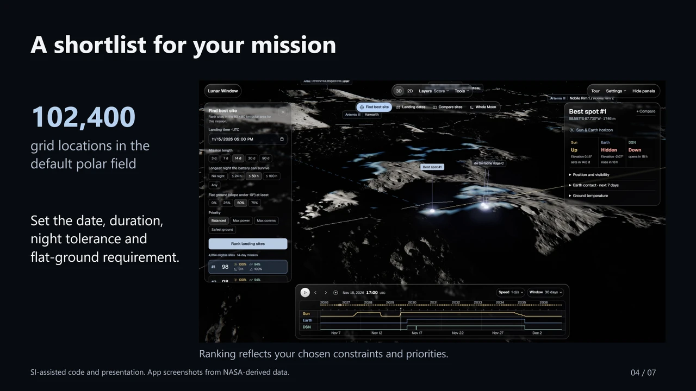
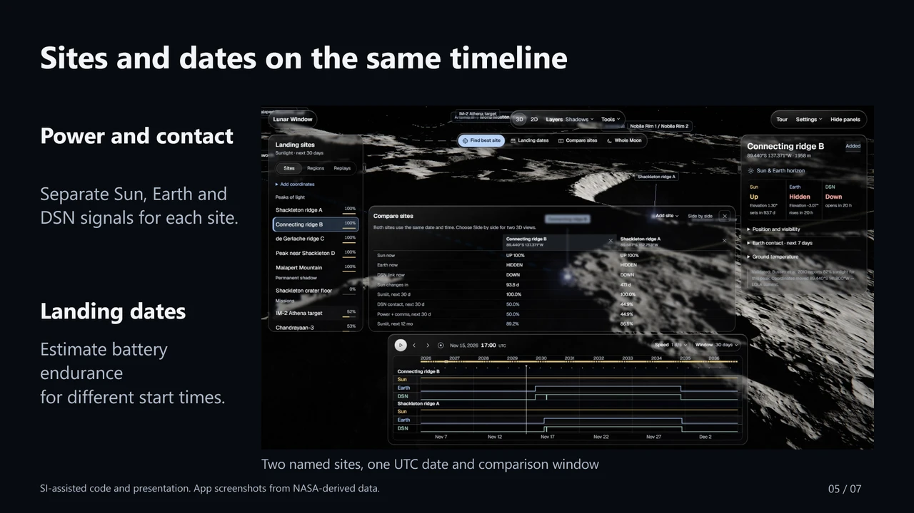
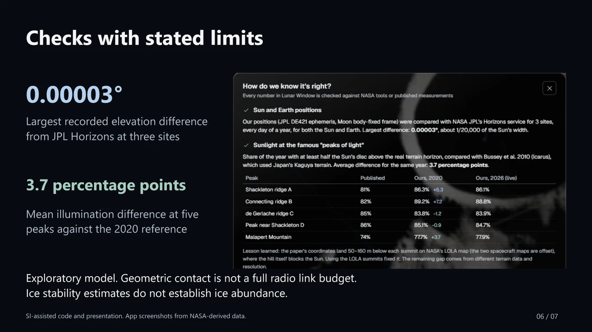
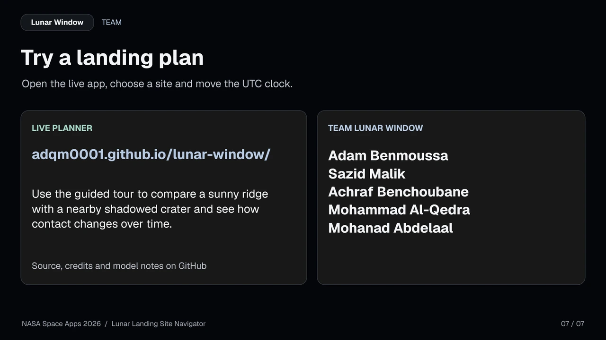

Lunar Window

The terrain changes the decision

NASA data, computed in your browser

A shortlist for your mission

Sites and dates on the same timeline

Checks with stated limits

Team Lunar Window

Use the arrow keys or buttons. Seven slides total, including title and team. SI-assisted text and layout. Images capture the working application using NASA-derived data. Sources and credits · Open the planner